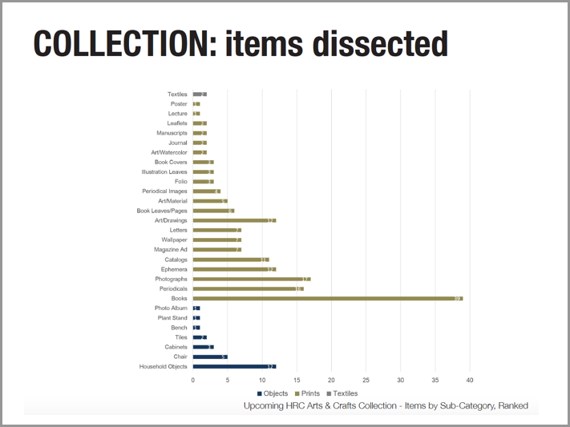
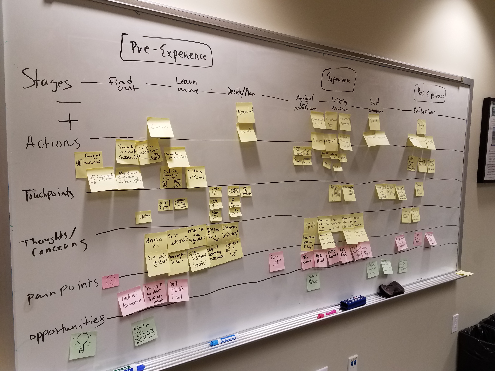
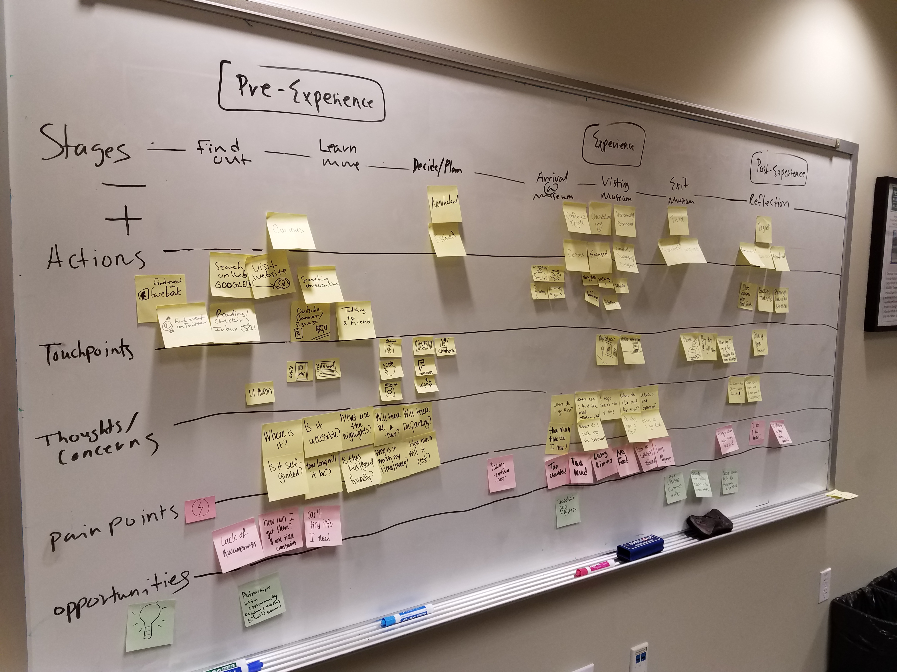
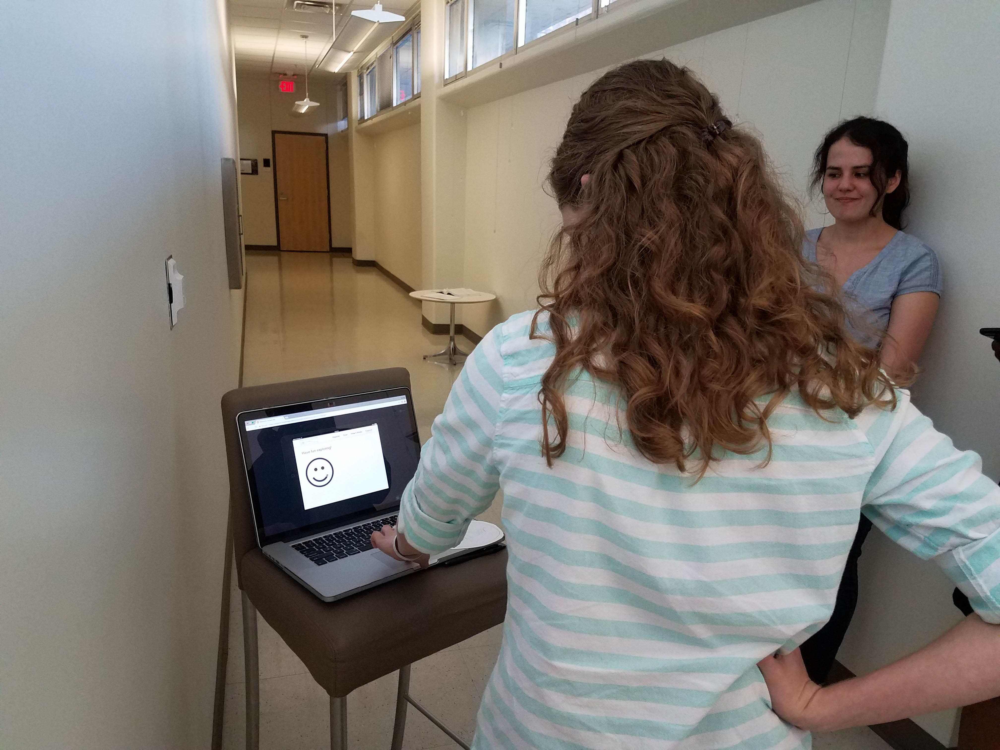
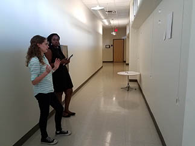

Harry Ransom Center
Interactive Museum Experience

Project Overview
Role: UX Researcher
Methods Used: Contextual Interviews, Journey Mapping, Usability Testing, Wireframing, Prototyping
Tools Used: Sketch, Invision
Platform: RFID Wristband and Sensors, iPad Application, Website
Group Members: Bria Fowler, Serena Mistry, Tim Salau
Project Duration: Sep. 2017 - Present (In Progress)
The Problem
The Harry Ransom Center ("HRC") at The University of Texas at Austin has an upcoming exhibit covering the Arts and Crafts Movement of the late 1800's. Most of the featured objects are books and print materials (in glass cases) that do not provide a very engaging experience for visitors.
Our Task
Our Rapid Prototyping class at UT's School of Information was tasked with determining how technology could best be integrated to provide a more interactive and immersive experience.
Our Solution
We developed a multi-faceted solution that provides interactive elements while ensuring visitors are not unnecessarily distracted by technology.
- Each visitor receives an RFID wristband that allows them to "bookmark" objects to learn more about them later.
- An application on dedicated iPads provides augmented reality and interactive activities that can be personalized via the visitors' wristbands.
- After leaving the HRC, visitors will receive an emailed link to a personalized website with more information about the items they "bookmarked".
 HRC Visitor Flow. Graphic design by Serena Mistry.
HRC Visitor Flow. Graphic design by Serena Mistry.

Prototype of iPad Welcome Screen

Prototype of Augmented Reality App

Personalized Website of Bookmarked Items
Our Process
Initial Research
Our class was provided with existing research, including archetypes and personas, on which to base our concepts. We chose to focus on the "Weekender" archetype: a person who is familiar with the topic of the exhibit and who likes to explore and learn about each object.


Will: Persona Provide by School of Architecture

Exhibit Objects: Mostly Print Materials
We visited the HRC to better understand the space and the Weekender archetype. We observed visitors and I performed intercept interviews with five people who appeared to fit the Weekender description. Separately from the HRC visit, I also spoke with several avid museum-goers who shared insights on interactive exhibits they had experienced. Several stories from these interviews informed our concept design:
- One woman did not want to use a phone-based solution because did not she would not be distracted by other notifications.
- Another person had ignored phone-based interactive elements at museums in the past because she wanted to remain immersed in the exhibit.
- One person shared that she enjoys sharing object she enjoyed at museums with friends.
From these insights we created a journey map for Bill, the Weekender, and focused on several potential pain points. Bill wants:
- More information about objects to learn as much as possible
- Exhibit items that are engaging, interactive, and inspiring.
- To remember what he saw and learned after leaving the museum.
- To be able to share experience with friends/family not in attendance
 

 Ideation and Prototyping
Ideation and Prototyping
With our journey map and pain points for the Weekender in mind, we were inspired by Disney's Magic Band to use a wristband as the means for visitor interaction. A RFID-enabled wristband could enable a visitor to interact with the exhibit while not being distracted by a smartphone or other device. Additionally, the HRC could provide iPads at selected objects so users can engage with augmented reality experiences and fun, interactive quizzes based on the exhibit topic.
Our solution incorporates the wristband, an app for the exhibit's iPads, and a website for visitors to retrieve their bookmarked items. I sketched the initial concept for the iPad app, and Serena Mistry mocked up initial wireframes for testing.

My Initial Sketch of iPad Welcome Screens

Welcome Screen Wireframe by Serena Mistry

Welcome Screen Wireframe by Serena Mistry
User Testing
Given the short timeframe for this project, we only had a few days to initiate and complete one round of user testing on our low fidelity mockups. We used a convenience sample of four fellow students in the School of Information for our testing. While we had hoped to obtain between five and eight testers, we proceeded with four testers to we would have time to iterate on the feedback.
We set up a couple of mock exhibit items in an empty hallway and walked participants through our "museum experience".

Participant Testing the "iPad" Welcome Screen

Mockup of a Painting and Button for Bookmarking

Participant Giving Feedback
Even our low fidelity museum experience resulted in participants providing valuable insights. While all four participants understood and liked the concept of bookmarking items to learn more about them later, other potential issues were uncovered:
- The word "Pin" as a descriptor for bookmarking favorite objects was confusing to some participants.
- The button/device for bookmarking objects needs to be placed at a height that is accessible for most people, including visitors in wheelchairs.
- The button/device for bookmarking objects needs to provide visitors with "feedback" to show that the item has been successfully bookmarked.
Results
We presented our concept to students at the School of Architecture who are working on a related project to design the actual exhibit. We received very positive feedback, and they especially liked a few aspects of our concept:
- The wristband is accessible for everyone in that visitors are not required to have a smartphone and the ability to download an app.
- The bookmarking of objects via the wristband would provide the HRC with a wealth of data to help them understand the parts of the exhibit visitors enjoyed most.
- The HRC could provide additional information about the exhibit and objects after someone's visit, including related items that were not able to be obtained for the exhibit and suggesting future exhibits to attend based on the items they bookmarked.
- The ability to bookmark objects could lessen the amount of visitors taking photographs of objects (flash photography is not allowed.
Next Steps
We are currently finalizing our iPad app prototype and completing a video to demonstrate the wristband experience.